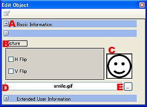

ピクチャオブジェクト編集
ピクチャオブジェクトに対しての詳細な内容を編集できます。
また、TWL-ManualEditorでは、画像に対して水平垂直反転を設定できます。
ピクチャオブジェクトの詳細な内容の編集
ピクチャオブジェクト編集ウィンドウでは、ピクチャオブジェクトに対して以下の編集が行えます。
|

|
- 基本情報。
拡大表示するとオブジェクトの基本情報を設定できます。
- 画像の設定。
- 水平反転
画像を水平方向に反転（左右反転）させます。 - 垂直反転
画像を垂直方向に反転（上下反転）させます。
- サムネイル。
画像のサムネイルが表示されます。
- ファイルネーム。
画像のファイルネームが表示されます。
- ファイル選択。
ファイル選択ダイアログを開きます。
|